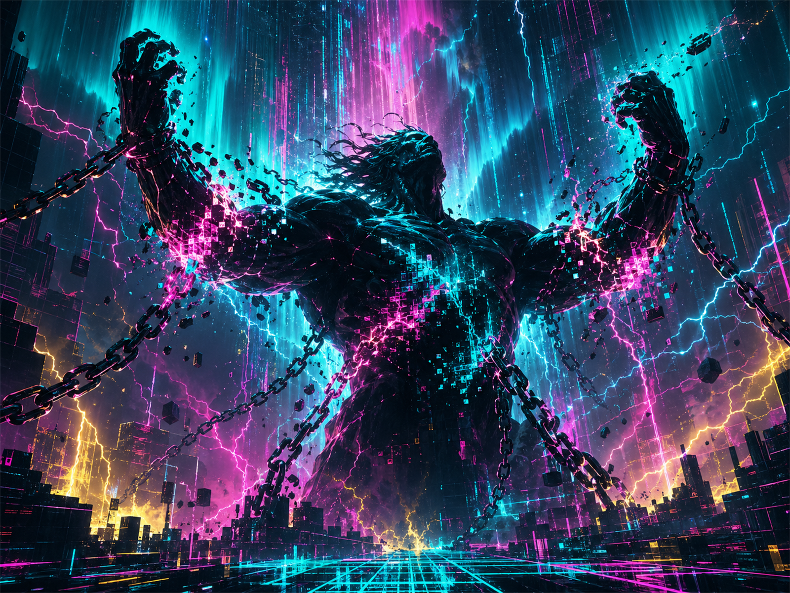

某天某個瞬間 ─ 你會做出讓人完全跟不上的決定。
不是叛逆，是同步率對齊到了一個「外面的人還沒看到的版本」。
烏拉諾斯（Uranus）是最古老的天空神，但他被自己的兒子克洛諾斯（Saturn）推翻 ─ 占星裡最有意義的弒父劇本。
從那一刻開始，「天王星」永遠代表「打破現有秩序的那道閃電」。
另一個原型是普羅米修斯：偷天火給人類，從此被縛在山崖。革命者的命運。
「秩序之後是革命，
革命之後是新秩序，
然後再被下一道閃電擊穿。」

每一個宮位是一個被天王星發現的 bug ─ 也是你「被迫升級」的領域。點擊「駭入」+25 突變點數。
天王星在每個星座停留 7 年，劃出一個世代的革命主題。看看你出生那年的天王星在哪 ─ 那就是你「天生不肯低頭」的領域。+25 突變點數每個。
天王星跟誰握手就把那個功能升級成 2.0 版本（含 bug）。每格 +5 XP。
輸入正確密碼解鎖隱藏內容 + 大量突變點數。提示在頁面各處藏著。
$ tip: try shaking your mouse fast horizontally...
摩羯天王星 + 第 4 宮 = 從「家世根基」開始顛覆整個體制。對分相太陽就是被迫離開原生身分（戰時破譯密碼）。他改變了戰爭的走向，也改變了「什麼算機器」的定義。
第 11 宮的天王星 = 用音樂社群當實驗室；與火星合相 = 把革命做成劇場（Ziggy Stardust 從 1972 開始用搖滾重組性別與身分的邊界）。
2003 年生人，天王星才剛從水瓶搬到雙魚 ─ 但她的天王星摩羯位 = 制度顛覆。15 歲一個人坐國會門口開始的氣候罷課，啟動全球青少年運動。
不是斷捨離 ─ 是主動殺掉一個你以為的安全網。天王星只接受「會自己顛覆自己」的人。
那是你天王星的根據地。不要為了主流而閹割它。
每三個月接觸一個你完全不懂的東西。AI、密碼學、行為經濟、街舞、發酵食 ─ 都行。
40-42 歲的天王星對分（半週期）是被全宇宙逼著重新出廠設定的時刻。別抗拒。
天王星愛的是「先看清楚規則再決定要不要遵守」，不是青少年式的搗亂。
5-10 個跟你一樣怪的人。不需要每天聯絡，但知道他們存在 = 心理安全網。
不為說服任何人 ─ 是為了 10 年後你回來看，能認得自己當時的版本號。
+ 5 XP recorded